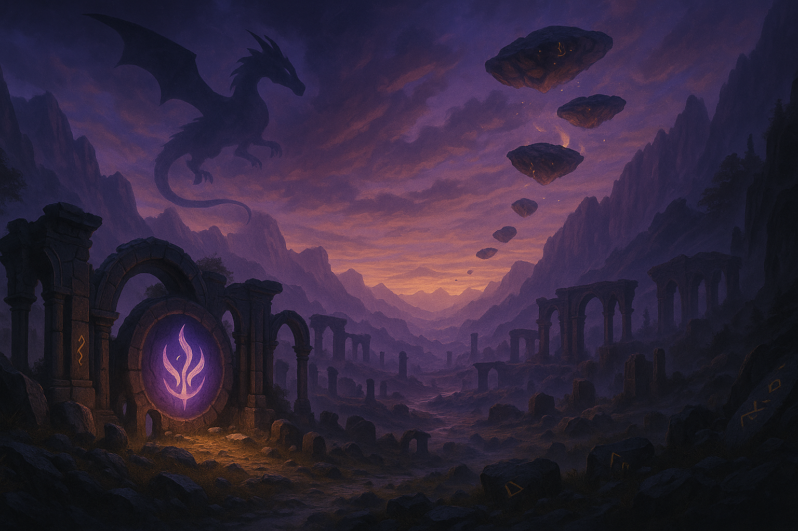
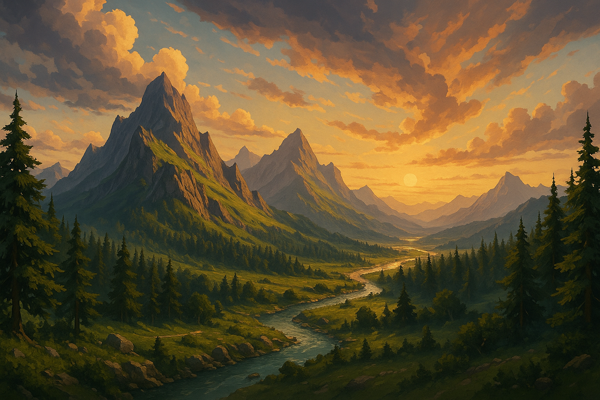

Valedracia is the fantasy world I’ve been building for my D&D campaign and my card game Mythrics. It’s full of story, and powerful elemental magic. Each Element—like Light, Dark, Time, Fire, Chaos, etc.—has its own god or fallen god behind it, and those powers shape everything in the world. The story spans different eras. There are unique locations like ClearCliff and Duskwharf, where players can explore and GM's(Game Masters) can create adventures. The world is divided into regions, each with its own culture and history, like the Draconithia Empire, which is ruled by a council of powerful indivituals. Valedracia is basically my playground for storytelling—full of magic, strategy, and drama. Whether it’s in the card game or the campaign, there’s always something happening.


Valedracia is home to many tongues — from ancient runes whispered by the gods to tribal dialects echoing through the forests.
Explore the beasts of Valedracia — mighty dragons, sly forest spirits, and the horrors that dwell in forgotten places.
Delve deeper into myths, relics, and forgotten wars. The world of Valedracia hides secrets waiting to be uncovered.